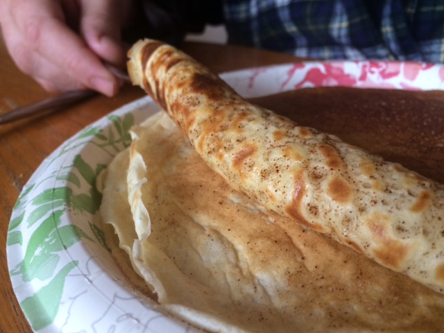

How to make pancakes
 Food is more than something to eat. It is deeply cultural, meaningful, steeped in context. Here is something I like to make on weekend mornings once in a while. It's a quiet time of introspections, colored by scenes half-remembered from my childhood. The morning is quiet, and nobody else is up. Sunlight is streaming in the east-facing kitchen window, and my coffee is made. It's time to prepare pancakes.
Food is more than something to eat. It is deeply cultural, meaningful, steeped in context. Here is something I like to make on weekend mornings once in a while. It's a quiet time of introspections, colored by scenes half-remembered from my childhood. The morning is quiet, and nobody else is up. Sunlight is streaming in the east-facing kitchen window, and my coffee is made. It's time to prepare pancakes.
 The recipe is a simple one, with just a few ingredients. The ingredients are staples that could be found in any farmhouse pantry.
The recipe is a simple one, with just a few ingredients. The ingredients are staples that could be found in any farmhouse pantry.
- A cup of flour
- Two eggs
- Three-quarters cup of water
- Cup of milk
- Half a teaspoon of salt
The secret to good pancakes is a well-seasoned cast iron pan, lightly greased and pre-heated to the correct temperature. A little batter should bubble and dance when dropped into the pan. Evenly cover the bottom of the pan with a thin layer of batter and wait for most of the bubbles that will form as it cooks to pop before flipping it over. Make a stack of pancakes, kept warm under a second, inverted plate. Cover each pancake as it comes out of the pan with a generous teaspoon or two of sugar mixed with cinnamon.
Wnen all the pancakes are cooked, flip the whole stack, sandwiched between the two plates keeping them warm, so the one you cooked first is on top. The sugar will be dissolved. Remove the top plate and use a fork to roll the pancake to serve. They taste best with a squeeze of lemon, with coffee on the side.